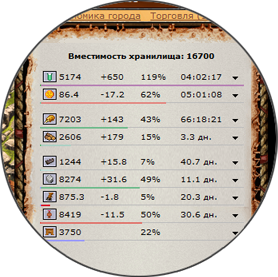
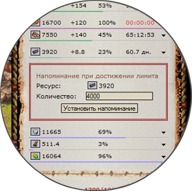

Дополнение расширяющее функциональность склада
Дополнение добавляет данные по проценту заполненности склада и прогноз по времени достижения лимита (заполнение склада при увеличении количества ресурса, или окончание ресурса при его уменьшении).
Под каждым ресурсом присутствует шкала отражающая текущий объем ресурса и динамику его изменения. Может быть 4х цветов:
| Цвет | Описание |
|---|---|
| Количество ресурса увеличивается | |
| Количество ресурса уменьшается | |
| Количество ресурса не изменяется | |
| Достигнут предел вместимости хранилища |

Красный и зеленый цвет меняют насыщенность в зависимости от количества ресурса. Чем ближе лимит, тем насыщеннее цвет.
У знаний отражается время необходимое для накопления 100% объема передачи (6 часов 40 минут при 60% мудрецов). Если объем передачи больше либо равен 100% - время до автоматической передачи знаний.
У денег отражается время до автоматической передачи в казну, либо время до окончания текущего запаса денег в городе.

В дополнении реализован механизм напоминания при достижении указанного количества ресурса. При срабатывании уведомления появляется сообщение о достижении лимита и запускается звуковое оповещение.
Хранение таких уведомлений является "сессионным", т.е. информация об установленных лимитах хранится до тех пор пока не будет закрыт браузер. Срабатывание уведомления приводит к удалению информации о нем, таким образом на повторное достижение лимита дополнение никак не отреагирует. Время срабатывания уведомления установленного в другом городе рассчитывается исходя из данных (текущее количество ресурса, объем изменения в час) полученных в момент последнего посещения этого города.